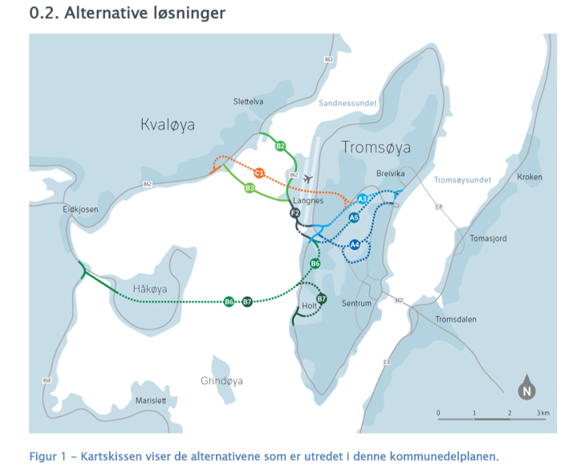
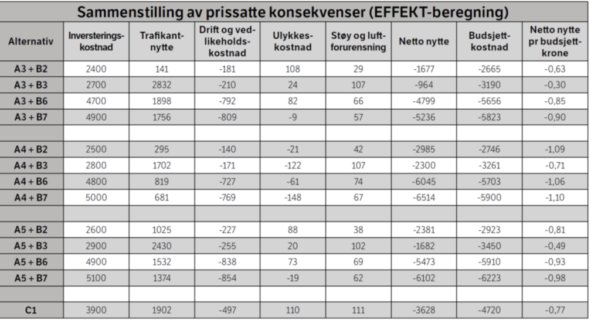
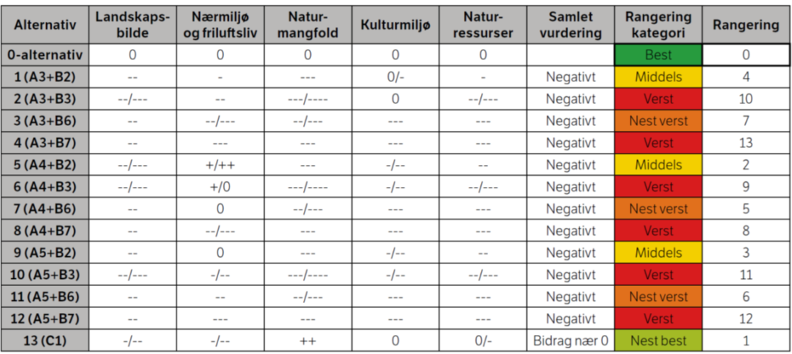
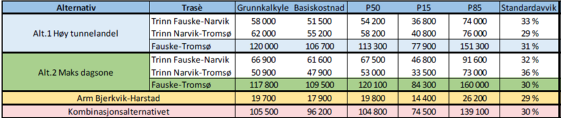

SOK-2014 Forelesning 4 - Nyttekostnadsanalyse i teori og praksis
Litt om kurset
Alle innleveringer vil handle om ett case som dere skal jobbe med gjennom hele semesteret * To obligatoriske innleveringer (arbeidskrav) * Presentasjon (arbeidskrav) * Prosjektoppgave (karaktergivende) * Fra 1-3 i hver gruppe * Prosjektet dere skal jobbe med er å lage en samfunnsøkonomisk utredning av Elektrifisering av Melkøya
Hva innebærer elektrifisering av Melkøya?
På Melkøya ligger landanlegget som driver gassutvinningen til Snøhvitfeltet. Litt av gassen brukes til å generer strømmen som anlegget bruker. Utslippene fra gasskraftverket på Melkøya utgjør ca. 2 prosent av norske utslipp. Norge er en del av EUs kvotemarked, så Equinor kjøper i dag CO2-kvoter for utslippene og har en nasjonal målsetting om 50-55 prosent reduksjon i CO2 utslipp innen 2030. EU har vedtatt det samme, men i motsetning til andre EU-land har Stortinget vedtatt at alle kuttene skal tas innenlands. Det betyr at Norge må kutte til en høyere kostnad enn kvoteprisen i EU. Regjeringen og Equinor ønsker å kutte utslippene fra Snøhvitfeltet ved å legge ned gasskraftverket som forsyner feltet. Regjeringen og Equinor ønsker i stedet å ta kraften fra elforsyningen på fastlandet
Hva er tiltaket?
- Å legge ned gasskraftverket på Melkøya
- Å legge kraftlinje mellom Skaidi og Hammerfest
- Å dekke Snøhvitfeltets kraftbehov med kraft fra nettet i Finmark.
Hva må utredes?
- Kostnadene ved å bygge kraftledningen og forsyne anlegget med landstrøm
- Besparelsen i CO2-kvoter
- Annen nytte-kostnad
Innleveringene
Obligatorisk innlevering 1 (Fase 1-3 ihht veilederen):
- Gjør en vurdering av tiltaket ihht. DFØs veileder og identifiser hvilken informasjon som trengs og hvilke forutsetninger som må gjøres
- Innhent informasjon
- Sett opp en disposisjon/arbeidsplan (bruk veilederen)
Obligatorisk innlevering 2 (Fase 3-5):
- Bruke det du har lært til å sette opp en nytte-kostnadsanalyse
- Beregne nåverdi av prosjektet
Endelig innlevering (Fase 1-8):
- Forbedre det som er gjort i tidligere innleveringer
- Lever en endelig utredning av tiltaket.
- Utredningen bør ha samme form som eksemplene i pensum.
- Målet er en rapport som kunne vært presentert for Stortinget og Olje- og energidepartementet som grunnlag for en beslutning om elektrifisering.
Nytte-kostnadsanalyse
Nytte-kostnadsanalyse er en utredning av offentlige prosjekter som skal hjelpe politikerne og offentlige institusjoner til å prioritere prosjekter. Det skal være en faglig vurdering og så objektiv som mulig. DFØ har en veileder som skal standardisere prosessen
Det er flere grunner til å gjennomføre samfunnsøkonomiske analyser * Mest mulig velferd ut av samfunnets knappe ressurser ved å sørge for effektiv ressursbruk * En systematisk gjennomgang av alle virkninger for berørte grupper i samfunnet * Et godt beslutningsgrunnlag for å rangere og prioritere mellom alternative tiltak * Sile ut ulønnsomme tiltak på et tidlig tidspunkt * Et godt grunnlag for å realisere gevinster når tiltaket er iverksatt * Et godt grunnlag for resultatmåling og evaluering av tiltaket i etterkant * Gjøre grunnlaget for beslutninger om offentlige tiltak mer synlig for offentligheten
Hva brukes en samfunnsøkonomisk analyse til?
- På alle typer offentlige tiltak: reguleringer, investeringer, tjenesteproduksjon, reformer osv.
- På tiltak utført av private aktører på oppdrag for staten
- Innenfor alle sektorer i samfunnet
- På prioriteringer innenfor en virksomhets ansvarsområder, innad i en sektor eller på tvers av ulike sektorer
En samfunnsøkonomisk analyse skal
- Ta hensyn til økonomisk kvantifiserbare effekter (prissatte virkninger)
- Ta hensyn til ikke-kvantifiserbare effekter (ikke-prissatte virkninger)
- I så stor grad som mulig/hensiktsmessig ta med all relevant nytte og alle relevante kostnader
- Unngå dobbelttellinger/glemme alternativ anvendelse
- Ikke ta politiske hensyn
- Inneholde en usikkerhetsanalyse
- Beskrive fordelingsvirkninger
- Gi en samlet vurdering
Eksempel: Ny kvaløyaforbindelse
Fra rapporten:

Prissatte konsekvenser:
Fra rapporten:

Ikke prissatte konsekvenser:
Landskapsbilde
Alternativ C1 kommer best ut. Alternativene som inneholder Kvaløyforbindelsene B2 og B3, samt B7 (Holt) kommer dårligst ut, og resultatet er at disse alternativene har middels til stor negativ konsekvens for landskapsbilde. Øvrige alternativ har middels negativ konsekvens.
Nærmiljø og friluftsliv
Alternativene som inneholder Kvaløyforbindelsene over Håkøya (B6 og B7) kommer dårligst ut. Resultatet er at disse alternativene har stor negativ konsekvens for nærmiljø og friluftsliv, spesielt gjelder dette B7 som i tillegg berører områder på Holt. Parallell bru (B2) har minst negativ konsekvens for dette temaet. Alternativene som inneholder tverrforbindelsen A4 vil i mindre grad berøre den botaniske hagen i Breivika og kommer således best ut av alternativene for ny tverrforbindelse.
Naturmangfold
Alternativene som inneholder Kvaløyforbindelsene B2 og B3 kommer dårligst ut, og resultatet er at disse alternativene har stor til meget stor negativ konsekvens for naturmangfold. Alternativene over Håkøya (B6 og B7) har begge stor negativ konsekvens. C1 har liten negativ konsekvens. Forslag til kommunedelplan for ny tverrforbindelse og ny forbindelse til Kvaløya 12 Statens vegvesen Region nord
Kulturmiljø
Alternativene som inneholder Kvaløyforbindelsene over Håkøya (B6 og B7) kommer dårligst ut, og resultatet er at disse alternativene har middels til stor negativ konsekvens for kulturmiljø. Øvrige alternativ har middels negativ konsekvens. Det knyttes en del usikkerhet til en del områder (Holt, Langnes), og det vil gjennomføres supplerende markundersøkelser og vurderinger i løpet av barmarksesongen 2015.
Naturressurser
Reindrift: Alternativ som inneholder Kvaløyforbindelsen B3 kommer dårligst ut med middels til stor negativ konsekvens. For øvrige alternativ er konsekvensene satt til middels negativ. Vannressurser: Alternativene som inneholder Kvaløyforbindelsene over Håkøya (B6 og B7) kommer dårligst ut med middels negativ konsekvens. For øvrige alternativene er konsekvensene satt til liten negativ. Jord- og skogbruk: Alternativene som inneholder Kvaløyforbindelsene B3, B6 og B7 kommer dårligst ut med stor negativ konsekvens. Alternativ som inneholder Kvaløyforbindelsen B2 er vurdert til å ha middels til stor negativ konsekvens, C1 til middels negativ konsekvens. Georessurser: Alle alternativene er vurdert til å gi fra liten til middels positiv konsekvens. Årsakene til dette er at det er satt som forutsetning at masseoverskudd er å anse som en ressurs.
Oppsummering ikke-prissatte konsekvenser:

Oppgave:
Er all relevant nytte og alle relevante kostnader tatt med?
Usikkerhetsanalyse
Kvaløyaforbindelseutredningen inneholder ingen usikkerhetsanalyse I utredningen for Nord-Norgebanen ser den slik ut

P50, P15 og P85 er kostnadsanslag hvor sannsynligheten for at kostnadene blir lavere enn tallet er henholdsvis 50%, 15% og 85%. Det er en anlig måte å illustrere usikkerhet
Fordelingsvirkninger.
Kun én av rapportene som er pensum i dette kurset, behandler fordelingsvirkninger. Det kan tyde på at det ikke alltid anses som relevant å ha i rapporter, selv om det står i veilederen.
I veilederen står det at «Formålet med denne arbeidsfasen er å beskrive hvordan virkningene av tiltakene fordeler seg mellom ulike grupper i samfunnet». Videre: «Beskrivelsen av fordelingsvirkningene tas med som en tilleggsanalyse og skal ikke inngå i grunnlaget for selve rangeringen og anbefalingen av tiltak»
Arbeidsfasene
- Beskriv problemet og formuler mål
- Identifiser og beskriv relevante tiltak
- Identifiser og beskrive virkningene
- Tallfest, vedsett og vurder virkninger
- Vurder samfunnsøkonomisk lønnsomhet
- Gjennomfør usikkerhetsanalyse
- Beskrive fordelingsvirkninger
- Gi en samlet vurdering og anbefal tiltak
Fase 1 - Beskriv problemet og formuler mål
Det oppfattes som et problem når dagens situasjon eller utvikling er en annen enn den som er ønsket. I et samfunn finnes det problemer av mange slag uten at det dermed er en samfunnsoppgave å løse alle disse. De problemene som samfunnet kan eller bør løse, kalles samfunnsproblemer.
Fase 1 - Problembeskrivelse
- Beskriv det observerte problemet.
- Beskriv årsakene til problemet.
- Beskriv og tallfest de samfunnsmessige konsekvensene av problemet.
Fase 2 - Hva er et tiltak?
- pedagogiske virkemidler, for eksempel veiledning og informasjon
- økonomiske virkemidler, for eksempel avgifter eller tilskudd
- regulering, for eksempel påbud eller forbud
- organisatoriske virkemidler, for eksempel sentralisering eller desentralisering
- offentlige tilbud av produkter og tjenester, for eksempel infrastruktur og helsetjenester
- offentlige anskaffelser, for eksempel IKT-tjenester og kontorutstyr
Fase 2 - Stegvis prosess for komme frem til de relevante tiltakene
- Definer mulighetsrommet.
- Utforsk mulighetsrommet.
- Grovsil tiltakene.
- Beskriv tiltakene og vurder utformingen.